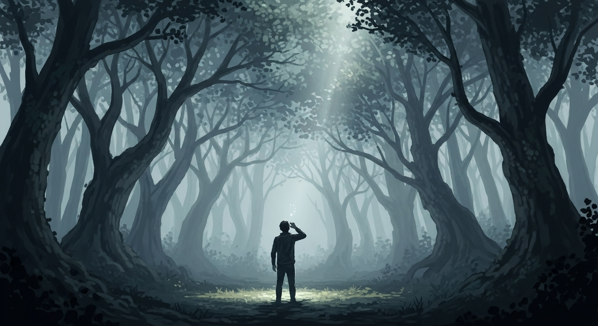
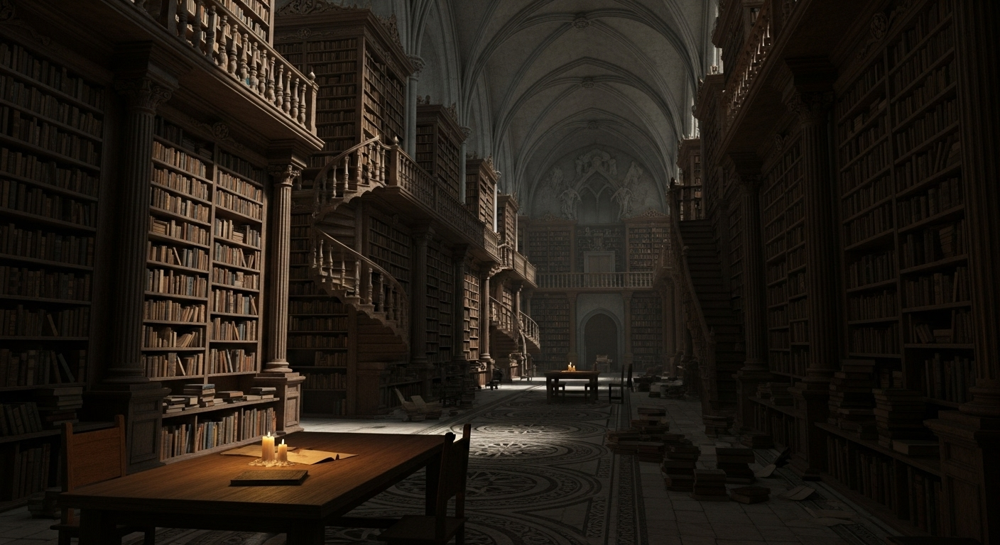
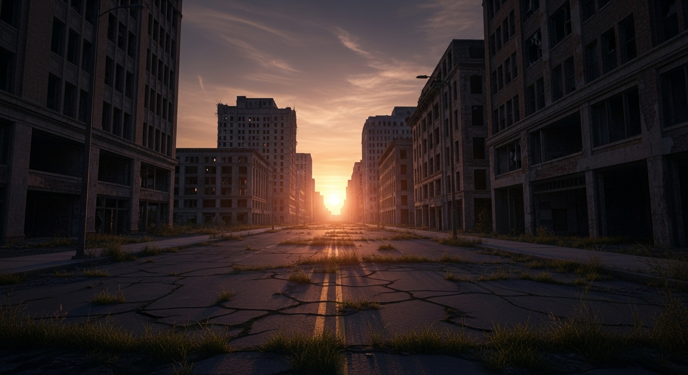
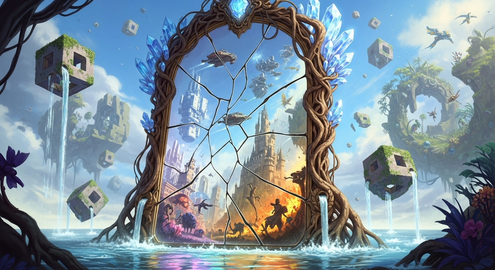
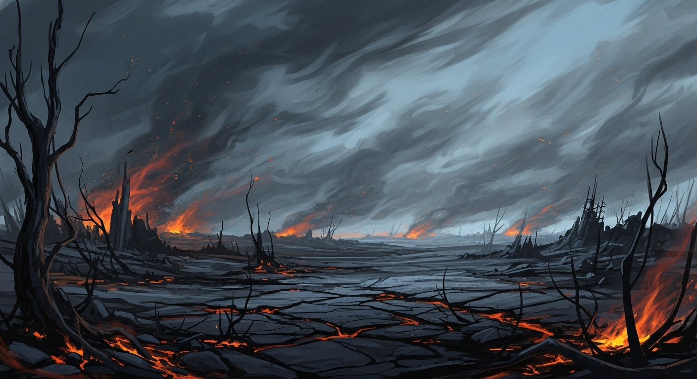
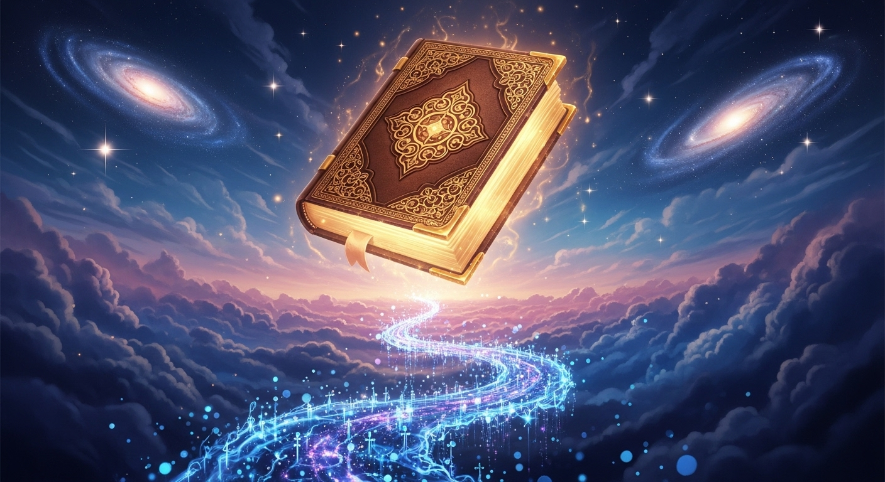
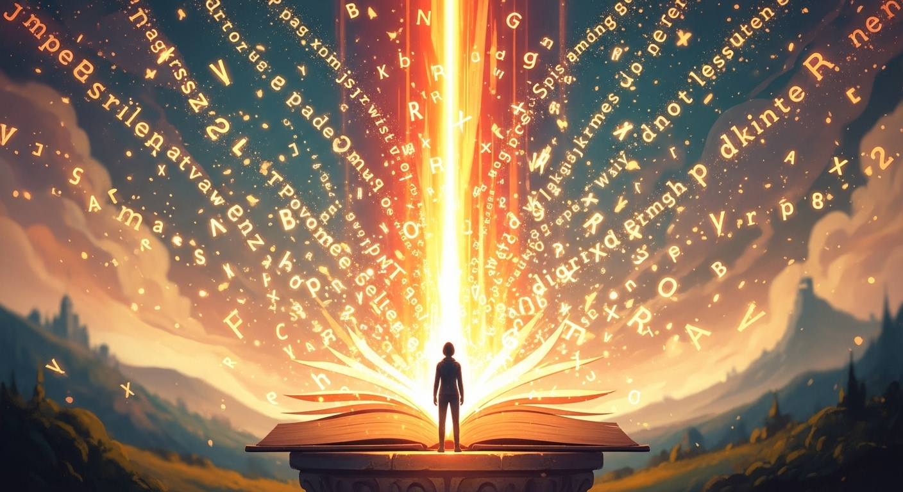

| الفصل الأول: النداء الأول |
| الفصل الثاني: مكتبة الظلال |
| الفصل الثالث: مدينة الصمت |
| الفصل الرابع: مرآة الزمان |
| الفصل الخامس: رماد المعنى |
| الفصل السادس: سفر النور |
| الفصل السابع: الكلمة التي أشرقت |

كانت المدينة تغرق في ضجيجها كمن يهرب من نفسه. شاشاتٌ لا تنطفئ، وأصواتٌ تتقاتل لتملأ الفراغ، ووجوهٌ كثيرة لا تنظر في العيون. في وسط هذا الزحام، جلس يوسف على سطحٍ قديمٍ يطلّ على نهرٍ كئيبٍ، عيناه معلّقتان بالسماء الرمادية التي تشبه ذاكرته. منذ أسابيع، يسمع نداءً غريبًا لا يأتي من الخارج، كأنّ صوته ينبعث من داخل صدره، من مكانٍ لم يزره من قبل. لا يفهم معناه، لكنه لا يستطيع إسكاتَه. كلمةٌ واحدةٌ تتكرّر في قلبه كلّما حاول أن ينسى: **النور**. كان يوسف يعيش كمن يمشي في حلمٍ طويلٍ من الأسلاك والبيانات. درس الفيزياء، وعشق الرياضيات، وحاول أن يزن العالم بمعادلةٍ منطقية، لكن شيئًا في داخله ظلّ يقاوم الأرقام. كان يشعر أن الحقيقة التي يبحث عنها لا تُقاس بالمسطرة، بل تُرى حين يُغلق العينان ويصمت العقل. في تلك الليلة، انقطعت الكهرباء عن المدينة. صمتت الشاشات، وغرقت الطرق في ظلمةٍ لم يعرفها منذ طفولته. خرج إلى الشرفة، فوجد السماء مليئةً بنجومٍ لم يرها من قبل. وللمرة الأولى منذ أعوامٍ، شعر أن الظلام لا يُخيف، بل يُنصت... كما لو كان ينتظر منه شيئًا. همس في نفسه: – ما الذي يحدث لي؟ فجاءه الصوت، لا من الخارج، بل من داخله تمامًا، واضحًا كأنه يُتلى في روحه: > "ابحث عن النور، يا يوسف، فإنك لم تُخلق لتعبد الظلّ." ارتجف قلبه. لم يكن يعرف هل جنّ أم استيقظ. أمسك دفتره القديم وكتب: *"ربّما الجنون هو أول الطريق إلى الحقيقة."* في الصباح، جلس في المقهى المعتاد، يتأمل الناس الذين يسيرون بسرعةٍ كأنهم يهربون من شيءٍ غير مرئي. كان يشعر أن كلّ وجهٍ يخفي حكايةً مطفأة. تذكّر حديث أستاذه في الجامعة حين قال له ساخرًا: "الفلسفة لا تُطعم خبزًا يا يوسف، دعك من الأحلام وتفرّغ للواقع." ضحك يوسف حينها، لكنه الآن أدرك أن الواقع نفسه جائع إلى معنى. عاد إلى منزله، وأغلق الباب بإحكام. جلس على الأرض وسط الكتب المتناثرة، وأشعل شمعةً صغيرة. ضوءها الضعيف انعكس على جدران الغرفة كأنّه قلبه يحاول أن يرى. همس ثانيةً: – من أنت أيها الصوت؟ فأجابه الصمتُ بوضوحٍ غريب: > "أنا أنت، حين تخلع ضجيجك، وتسمع قلبك." تجمّدت أنفاسه، وشعر أن الليل كلّه يقترب منه ككائنٍ حيٍّ يريد أن يقول شيئًا. أغلق عينيه، ورأى في الظلمة دوائر من نورٍ تتّسع ببطءٍ، حتى صارت سماءً كاملة. ومن قلب تلك السماء سمع الكلمات التي غيّرت حياته إلى الأبد: > "لكلّ إنسانٍ شيفرةٌ خفيةٌ بداخله، > لا تُقرأ بالحروف، > بل تُفتح بالنور." وحين فتح عينيه، كانت الشمعة قد انطفأت، لكن قلبه أضاء. علم أن النداء لم يكن حلمًا… بل بداية الرحلة. الرحلة نحو **شيفرة النور**.

كان يوسف يمشي في أزقة المدينة كمن يبحث عن شيءٍ لا يعرف اسمه. النداء الذي سمعه لم يغادره، بل صار كصدىً يلاحقه في كل شارعٍ وفي كل وجهٍ عابر. لم يعد يرى الأشياء كما كانت، حتى الأبواب المغلقة بدت له كأنها تدعوه إلى عبورها. في أحد الأزقة القديمة، لمح بناءً غريبًا لا يحمل لافتة، بابٌ خشبيٌّ عريض تعلوه نقوشٌ باهتة تشبه خيوط الضوء. اقترب ببطءٍ ودفع الباب، فصدر صوتٌ كأنّه تنهيدةُ قرنٍ مضى. كان الداخل مظلمًا، لكن رائحة الورق العتيق ملأت أنفاسه. إنها مكتبة، لكنها ليست كأي مكتبةٍ رآها من قبل. رفوفٌ تمتدّ كالمتاهة، كتبٌ بلا عناوين، ومخطوطاتٌ تهمس بأصواتٍ خفيّةٍ حين تمرّ بجانبها. وفي زاويةٍ بعيدةٍ جلس رجلٌ عجوزٌ يرتدي عباءةً رمادية، تتدلّى من عنقه قلادةٌ من زجاجٍ مضيءٍ كأنه يحمل شظية من القمر. قال العجوز دون أن يرفع رأسه: – تأخرت يا يوسف. تجمّد يوسف، لم يكن قد تحدّث إلى أحدٍ عن صوته الداخلي، فكيف عرف هذا الشيخ اسمه؟ اقترب بخطواتٍ حذرةٍ وقال: – من أنت؟ ابتسم العجوز وقال: – أنا حارسُ الظلال… والمكتبة لا تفتح إلا لمن سمع النداء. جلس يوسف أمامه، وعيناه لا تكفان عن الدوران بين الرفوف. قال الشيخ: – كلُّ كتابٍ هنا هو روح إنسانٍ بحث عن النور ثم غاب. – وهل النور في الكتب؟ – النور ليس في الورق، يا بنيّ، بل في مَن يقرأه. الكتب مرايا، والجاهلُ يراها جدرانًا، والعاقلُ يراها نوافذ. مدّ الشيخ يده وأخرج مخطوطةً صغيرةً مغلّفةً بجلدٍ أسود. كانت خفيفةً كأنها هواء، لكن حين لمسها يوسف شعر بثقلٍ في صدره. قال الشيخ: – هذه المخطوطة تحمل نصف الشيفرة. اقرأها بعينيك، لا بعقلك. فتحها، فوجدها خاليةً من أي كتابة. قال مندهشًا: – إنها فارغة! ضحك الشيخ وقال: – النصف الأول من الشيفرة هو الصمت. حين تفهم الصمت، سترى الكلام. جلس يوسف ساعاتٍ طويلةٍ في تلك المكتبة. قرأ كتبًا بلا حروف، وشعر أن الكلمات تتحرك داخله. في كل رفٍّ، حكايةُ إنسانٍ خرج من الظلّ بحثًا عن النور. وفي آخر الرفوف، وجد مرآةً صغيرةً صدئة. نظر فيها فرأى وجهه مضيئًا بخطوطٍ من ضوءٍ خافت. سمع صوت الشيخ خلفه يقول: – حين ترى النور في نفسك، تبدأ الكتب في قراءتك أنت. خرج يوسف من المكتبة وهو لا يحمل شيئًا في يده، لكن قلبه كان ممتلئًا بأسئلةٍ أكثر من الإجابات. حين التفت إلى الوراء ليعود، لم يجد الباب. كأن المكتبة لم تكن مكانًا… بل اختبارًا. وفي صمت الليل، تردّد النداء من جديد: > "النور لا يُؤخذ من كتاب، بل يُوقَظ من قلب."

خرج يوسف من الزقاق الذي اختفت فيه مكتبة الظلال، فوجد نفسه في مدينةٍ لا يعرفها رغم أنه عاش فيها عمره كلّه. الناس تمشي بسرعةٍ غريبة، وجوههم ثابتة كأنها أقنعة. لا أحد ينظر إلى الآخر، ولا أحد يتحدث. حتى السيارات تمرّ بلا صوتٍ، وكأنها أطيافٌ من دخان. وقف في منتصف الطريق وهو يشعر أن الهواء نفسه يهمس له: > "لقد دخلتَ مدينةَ الصمت، يا يوسف، > حيث يتكلّم الناس بأعينٍ مطفأة، > ويستمعون بآذانٍ لا تسمع." مشى بخطواتٍ بطيئة، كمن يخشى أن يوقظ شيئًا نائمًا منذ قرون. مرّ بجانب مقهى مليءٍ بالناس، لكنهم كانوا صامتين، يتابعون شاشاتٍ تُعرض فيها وجوههم هم أنفسهم. جلس بينهم دقائق، فشعر أن عقله يتجمّد. كلّ ضحكةٍ هناك كانت آلية، وكلّ ابتسامةٍ مكرّرةٍ كصدى قديم. خرج مسرعًا، وبدأ يسمع في رأسه ذلك الصوت القديم، الذي جاءه أول مرةٍ في الظلام: > "إنهم لا يصمتون لأنهم لا يملكون الكلام، > بل لأنهم فقدوا المعنى." دخل حديقةً صغيرةً في أطراف المدينة، فوجد طفلةً صغيرةً تلعب وحدها بالطين. اقترب منها، فقالت له دون أن تلتفت: – هل تبحث عن النور؟ تراجع مذهولًا وقال: – من أخبرك؟ قالت مبتسمة: – الذين صمتوا كثيرًا، يرون ما لا يُقال. ثم أشارت إلى السماء وقالت: – هنا، فوق الأبنية، يسكن صدى النور. رفع رأسه، فرأى على سطح أحد الأبراج ضوءًا غريبًا يومض ثم يختفي. قرر أن يصعد. الدرج طويلٌ، كلّ طابقٍ يشبه الآخر، كأن المبنى لا يريد أن يصل أحد إلى نهايته. وفي الطابق الأخير، وجد بابًا معدنيًا صدئًا. فتحه بصعوبة، فاندفع الهواء البارد إلى وجهه. كانت المدينة تمتدّ تحته، بحرًا من الأضواء التي لا تُدفئ. شعر أن كلّ لمبةٍ هناك تصرخ من فرط العزلة. وقف وحيدًا وقال في نفسه: – كيف يمكن لمدينةٍ بهذا الضوء أن تكون بهذا العمى؟ وفجأةً، خرج من جيبه ورقةٌ صغيرةٌ كان قد نسيها داخل المخطوطة الفارغة. نظر إليها، فظهرت عليها كلماتٌ لم تكن موجودة من قبل: > "حين يكثر الضوء، يعمى البصر. > والذين يهربون من الصمت، يضيعون في الصدى." جلس على حافة السطح، وشعر لأول مرةٍ أن الصمت يمكن أن يكون صديقًا. أغمض عينيه، فسمع أنين المدينة كلها يتردد في صدره، كأنها تناديه ليوقظها من نومٍ عميق. حين فتح عينيه، رأى ظلًا بشريًا يقف عند الباب خلفه، وقال بصوتٍ هادئٍ لكنه حازم: – النور لا يُرى من فوق. تعالَ إلى المرآة. ثم اختفى. ترك يوسف البرج خلفه، وهو لا يعلم إن كان ما رآه حقيقةً أم رؤيا، لكنّه أدرك أن الطريق التالي لن يكون في المدينة… بل في داخل نفسه.

في الليلة التالية، قاد يوسف خطواته بلا وجهةٍ محددة. كأن شيئًا خفيًّا يسحبه نحو المجهول، حتى وصل إلى أطراف المدينة حيث تتناثر البيوت كأحلامٍ نسيها الزمن. هناك، وجد كوخًا صغيرًا مضاءً بمصباحٍ واحد، وعلى بابه لافتةٌ مكتوبٌ عليها بخطٍّ مهتز: **بيت المرآة**. دفع الباب ودخل. كان المكان بسيطًا، جدرانه مغطّاة بمرايا من أحجامٍ مختلفة، كلّ واحدةٍ منها تعكس صورةً لا تشبه الأخرى. في منتصف الغرفة، مرآةٌ ضخمةٌ يعلوها الغبار، وحولها دوائرُ من رموزٍ محفورةٍ على الأرض. اقترب منها، فشعر بدفءٍ يخرج من الزجاج نفسه. رفع يده ولمسها. فانفتح أمامه مشهدٌ لم يكن من هذا العالم. رأى نفسه طفلًا يجلس تحت شجرةٍ في القرية القديمة، يسأل أباه عن معنى النور، فيردّ الأب بابتسامةٍ: – النور يا يوسف هو أن تعرف من أنت، حتى حين تُطفأ الشمس. ثم تغيّر المشهد. رأى نفسه شابًا يضحك في قاعة الجامعة، يسخر من فكرة الروح، ويقول أمام زملائه: "العلم وحده يكفي." شعر بصفعةٍ على وجهه، لكنها لم تأتِ من الخارج… بل من داخله. أراد أن يبتعد عن المرآة، لكنها جذبته أكثر. رأى نفسه في لحظاتٍ نسيها: وجوهًا جرحها بكلمة، وصداقاتٍ تكسّرت بصمته، وأحلامًا دفنها تحت حجارة "المنطق". ثم ظهر العجوزُ حارسُ مكتبة الظلال داخل الانعكاس، وقال بصوتٍ يملأ المكان: – الماضي ليس سجلاً يا يوسف، بل معلّم. من لا ينظر في وجهه القديم، لن يعرف كيف يولد من جديد. سأل يوسف وهو يحاول أن يتمالك صوته: – أهذه المرآة تُريني ما كان؟ – بل ما هو كائنٌ فيك منذ الأزل، لأن الزمان ليس خطًا يا بنيّ، بل دائرة، وأنت النقطة التي تدور فيها كلّ الحكايات. جلس على الأرض، والدموع تسيل على خديه بلا خجل. لم يبكِ خوفًا، بل طهارةً. كأن كلّ لحظةٍ من الألم القديم تُغسل بالنور الجديد. حين نهض، كانت المرآة قد صارت صافيةً كالماء، وفيها رأى وجهه يبتسم له، لكنّ الوجه لم يكن وجهه، بل وجهًا يشبهه في كلّ شيءٍ إلا العيون، كانت عيونًا تعرف كلّ شيء. سمع صوتًا خافتًا يقول من خلف الزجاج: > "النور لا يغيّر العالم، بل يغيّرك أنت… > وحين تتغيّر، يتبدّل الزمان حولك." تراجع يوسف خطوةً إلى الوراء، فانكسر الزجاج بصوتٍ يشبه الانعتاق. تبعثر الضوء في الغرفة، وأحسّ كأنّ الزمن نفسه تحرّر من قيوده. حين خرج من الكوخ، كان الفجر قد بدأ يرسم خيطه الأول على الأفق. ابتسم، وقال لنفسه: – الآن فهمتُ لماذا خُلقتُ في زمنٍ مزدحمٍ بالظلال. لقد آنَ لي أن أرى النور… لا بعيني، بل بقلبي.

لم يكن الصباح يشبه أي صباحٍ عرفه من قبل. كانت المدينة هادئةً على غير عادتها، كأنها تنتظر شيئًا سيحدث، شيئًا لا يمكن إيقافه. سار يوسف في الطرقات بعينين غريبتين، يرى كلّ شيءٍ كأنه يراه للمرة الأولى — الوجوه، الجدران، حتى ظلّه بدا له مخلوقًا جديدًا. منذ مرآة الزمان، لم يعد كما كان. صار يشعر أن كلّ ما اعتقد أنه حقيقةٌ بدأ يتفتت. الكتب التي أحبّها صارت باردة، والكلمات التي كان يعبدها لم تعد تصمد أمام سؤاله الجديد: **هل المعرفة نور، أم ستار؟** دخل مقهى صغيرًا في زاوية السوق القديم، جلس على الطاولة الأخيرة حيث يجتمع الغرباء. رجلٌ أعمى يعزف على عودٍ قديم، وشابٌّ يكتب شيئًا على منديلٍ بيدٍ ترتجف، وامرأةٌ تحدّق في كوبها كأنها ترى فيه مستقبلها المكسور. نظر إليهم يوسف وقال في نفسه: – كلّنا نحمل رماد المعنى، ندفنه في صدورنا ونسميه حياة. اقترب منه الرجل الأعمى وسأله بصوتٍ خافتٍ: – هل تبحث عن النور يا ولدي؟ أجابه يوسف بدهشة: – كيف عرفت؟ ضحك الأعمى وقال: – من طريقة إنصاتك. الذين يسمعون الضوء قلة. ثم أضاف: – أتعرف ما هو أخطر من الظلام؟ – ماذا؟ – أن ترى النور ثم تعود إلى العمى برغبتك. ساد صمتٌ طويل، ثم تابع الأعمى وهو يعزف نغمةً حزينة: – كلّنا نظن أننا نبحث عن المعنى، لكننا في الحقيقة نبحث عن شيءٍ نبرّر به خوفنا منه. غادر يوسف المقهى، وصوت العود يلاحقه كأنّه صلاة. كانت الشمس تغيب خلف الأبراج، وألوان السماء تتحوّل من ذهبٍ إلى رماد. جلس على الرصيف وأخرج المخطوطة التي أخذها من مكتبة الظلال. فتحها، فوجدها هذه المرة ممتلئةً بكلماتٍ تتوهج ثم تختفي. قرأ بصوتٍ مرتجف: > "المعاني تموت إذا لم تُحرق، > لأن النار وحدها تُنقّي النور من الرماد." أحسّ بحرارةٍ تخرج من الورق، فسقطت المخطوطة من يده واشتعلت دون لهب. كان الضوء يتصاعد منها كأنها تحترق لتُولد من جديد. أغلق عينيه وترك الدموع تنهمر، وشعر أنه هو نفسه يحترق، لكن احتراقه لم يكن موتًا… بل انبعاثًا. حين فتح عينيه، كانت المخطوطة قد تحوّلت إلى رمادٍ خفيفٍ يطير مع الريح. رفع يده، فالتصق شيءٌ منه بأصابعه كأنه أثرٌ مقدّس. سمع الصوت الذي عرفه منذ البداية يقول: > "من أراد النور، عليه أن يمرّ في النار أولاً." وقف يوسف وقد امتلأت عروقه بقوةٍ جديدة. لم يعد يخاف من السؤال، ولا من الظلام، فقد فهم أن الحقيقة لا تأتي لتطمئنك، بل لتُعيد خلقك من رمادك. ومع آخر شعاعٍ من الغروب، همس لنفسه وهو يتأمل السماء: – كنت أظن أن النور ضدّ النار، لكنني الآن أعلم أنه يولد منها.

ترك يوسف المدينة خلفه كمن يغادر قفصًا من ذهب. لم يعد يحمل شيئًا سوى رماد المخطوطة، ورغبةٍ لا تهدأ في أن يعرف: إلى أين يقوده هذا النور؟ سار أيّامًا في صحراء ممتدةٍ بلا نهاية. النهار نارٌ، والليل بردٌ من أسئلة. كان يسمع أحيانًا همسًا يجيء من الريح، وكأنها تردّد ما كتبه في لحظة النداء الأولى: > "ابحث عن النور، فإنك لم تُخلق لتعبد الظلّ." في الليلة الثالثة، جلس على كثيبٍ مرتفع، ورفع رأسه نحو السماء المرصّعة بالنجوم. قال بصوتٍ خافتٍ كأنه يناجي الكون: – إن كنتَ هناك، يا من أطلقتَ النداء، فأرشدني. فانبعث من الأفق ضوءٌ ضعيفٌ، كنبضةٍ تتردّد من بعيد. بدأ يسير نحوه بلا تردّد، كلّما اقترب، شعر أن الخطوات لا تمشي على الرمل بل على الهواء. كان الضوء يتحوّل إلى شكلٍ إنسانيٍّ من وهجٍ صافٍ، وجهٌ بلا ملامح، لكن فيه معرفةٌ لا تُوصف. قال يوسف، وصوته يرتجف: – من أنت؟ قال الكائن بنغمةٍ ليست صوتًا ولا صدى: – أنا النور الذي يسكنك منذ أول خفقة. أنا أنت حين تفهم أنك لست جسدًا فقط، بل وعيٌ يتذكّر أصله. جلس يوسف على الأرض مذهولًا، بين الخوف والإيمان، بين الشكّ واليقين. قال: – لماذا أنا؟ لماذا اخترتني لهذا الطريق؟ قال النور: – لأنك سألت، ومن يسأل بصدقٍ، فُتح له الباب. لكن تذكّر يا يوسف، النور لا يُعطى، بل يُحمَل. هو مسؤولية، لا مكافأة. ثم تحوّل الضوء إلى دوائرَ من رموزٍ متحرّكة، كأنها لغةٌ لم يعرفها بشر، ورأى داخلها مشاهد من عصورٍ متتابعة: رجلٌ يكتب على الطين، وآخر يشعل شمعةً في كهف، وفتاةٌ تتعلّم الحروف الأولى، ومجتمعٌ يبني مدينةً من علمٍ وعدلٍ ورحمة. فهم يوسف المعنى: > أن النور لا يخصّ فردًا، بل هو ميراثُ كلّ من صدق في البحث عنه. سجد على الرمل، وشعر أن الأرض تدور تحته بخفةٍ جديدة، كأنها تستعدّ لولادةٍ أخرى. حين رفع رأسه، كان الضوء قد بدأ يتلاشى ببطء. قال يوسف بصوتٍ يقطعه الحنين: – هل سأراك مرةً أخرى؟ فجاءه الجواب كنسمةٍ تمرّ على وجهه: > "لن تراني… بل ستصيرني." وبقي في الصحراء حتى الفجر، النجوم من حوله كحروفٍ مضيئةٍ في كتابٍ لا ينتهي، وقلبه يهمس لنفسه: – الآن فهمتُ، النور ليس وجهةً… بل سفرٌ دائم. فمن توقّف عن السير، انطفأ.

عاد يوسف إلى المدينة بعد أسابيعٍ من الصحراء، لكن المدينة لم تعد كما كانت — أو لعلّه هو الذي تغيّر. كلّ شيءٍ فيها صار أبطأ، أصدق، أعمق. حتى الضجيج بدا له كأنه موسيقى بعيدة، تُذكّره أن العالم ليس عدوًّا، بل انعكاسٌ لصوته الداخلي. دخل بيته القديم. الغرفة نفسها، الجدران نفسها، لكن النور مختلف. جلس على الأرض حيث جلس أول مرةٍ حين انطفأت الكهرباء. أشعل شمعةً صغيرة، لكنها لم تكن شمعةً من شمعٍ هذه المرة، بل كانت شعلةً من إدراك. فتح دفتراً جديدًا، وكتب على الصفحة الأولى: **"لا تبحث عن النور… كن النور."** وفجأةً، امتلأت الغرفة بوميضٍ خافت، ليس من النار ولا من المصباح، بل من الحروف التي يكتبها. كلّ كلمةٍ كان يخطّها تتحوّل إلى ضوءٍ صغيرٍ يصعد نحو السقف. قرأ بصوتٍ مسموعٍ كأنّه يكتب للعالم: > "النور فكرةٌ تُولَد حين يولد الصدق، > والصمت صلاةٌ تُفتح بها الأبواب، > والحبّ هو الشيفرة التي تُفكّ بها الحياة." توقّف لحظةً وأغلق عينيه. رأى نفسه في الصحراء من جديد، لكن هذه المرّة لم يكن وحده؛ كان يرى كلّ من عرفهم في رحلته — الشيخ، الطفلة، الأعمى، والوجوه التي رآها في المرآة. كلّهم يتحوّلون إلى شراراتٍ من نورٍ تدور حوله. سمع صوتًا واحدًا يخرج من كلّ الجهات: > "لقد كتبتَ الكلمة التي أشرقت… > والآن اكتب بها العالم." فتح عينيه، فوجد أن الحروف على الورق بدأت تختفي ببطءٍ، كأنها تذوب في النور نفسه. لم يحاول أن يمنعها. ابتسم وقال لنفسه: – ما يُكتب بالنور لا يُمحى، بل يعود إلى أصله. وقف أمام النافذة، كانت الشمس تشرق ببطءٍ خلف الأبنية الرمادية، لكنه رآها لأول مرةٍ كما لم يرها من قبل — ليست كرةً من نار، بل آيةً من حضور. أغلق الدفتر ووضع يده على قلبه، وقال بصوتٍ خافتٍ ملؤه السلام: – النداء انتهى… لكن الصدى بدأ. ثم سار نحو الضوء، وكلّ خطوةٍ كان يخطوها، كانت المدينة تزداد إشراقًا كأنها تتنفّس من جديد. وحين وصل إلى مفترق الطريق، سمع آخرَ همسٍ في داخله: > "النور لا يُختم، > لأنه بداية كلّ شيء." ابتسم يوسف، ورفع رأسه نحو السماء وقال: – وجدتُ الشيفرة… وكانت أنا.